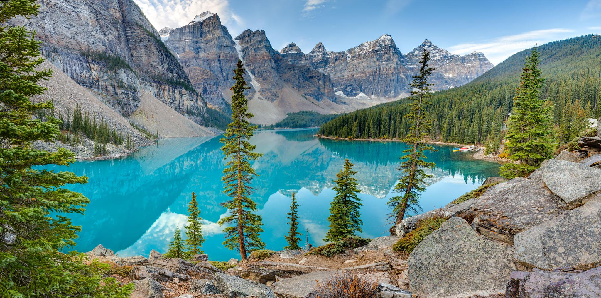

← 트래킹
🏞 모레인 호수
Moraine Lake
⭐ 로키를 대표하는 에메랄드빛 호수와 최고의 전망

📅 우리 일정
Day 3 오전
🥾 코스 선택
Rockpile Trail
⭐ 모레인 호수 최고의 전망 포인트
🚶 0.8km
⏱ 20~30분
💪 매우 쉬움
Lakeshore Trail
⭐ 모레인 호수를 가장 가까이에서 걷는 산책 코스
🚶 왕복 3km
⏱ 45~60분
💪 매우 쉬움
Consolation Lakes
⭐ 빙하와 한적한 호수를 만나는 힐링 트레킹
🚶 왕복 5.8km
⏱ 2~2.5시간
💪 보통
📍 Google Maps
← 트래킹